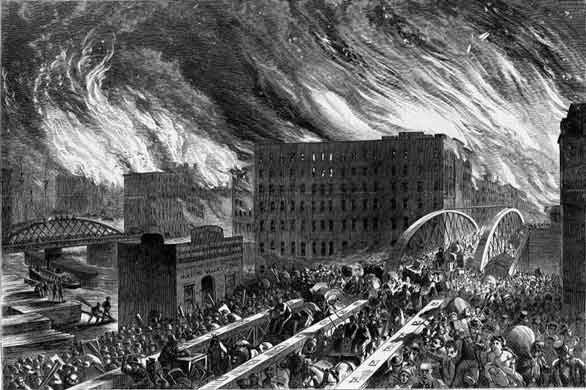

The Great Chicago Fire burned out of control for two days in 1871. The fire killed more than 300 people and destroyed about four square miles of wooden buildings and homes in Chicago, Illinois, USA. The cause of the fire has never been confirmed although arson is suspected. (Traditionally, the fire is said to have been started by a cow kicking over a lantern in the O'Leary family’s barn, but Michael Ahern, the Chicago Republican reporter who created the cow story, admitted in 1893 that he had invented the story!)